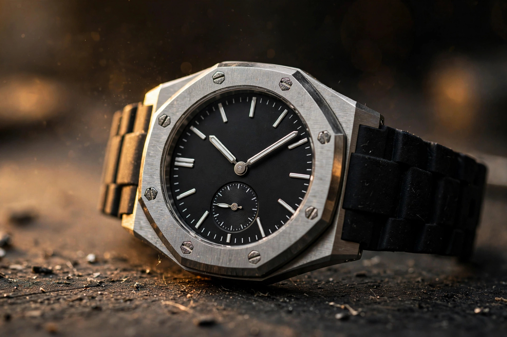

Watches / Quartz Engineering
The CasioNaut: Casio Rebuilds Its First G-Shock Without a Screen
Casio announced the G-Shock 2500 series on October 22, 2026, and it was reported on sale in the first week of November. Nine references, three construction families, and not a single LCD anywhere in the lineup. After forty-three years of proving a digital watch could survive anything, Casio built an analog one on the DW-5000C itself and dared it to survive the same way.

A note on scope before the engineering starts: I have not handled this watch. Everything that follows rests on Casio's published specifications, its development story, and launch reporting from Hodinkee, G-Central, and others, not on wrist time.
Forty-three years is a long time to keep a promise. Kikuo Ibe's original brief for the DW-5000C in 1983 was brutally simple: build a watch that does not break when dropped. Casio answered with a resin case, a floating module, and a digital display, because in 1983 a liquid-crystal screen was the most shock-proof way to show time. No hands to bend, no gears to knock out of mesh, nothing sticking up from the dial to catch a blow. Digital was the structural answer, not a style choice.
Now Casio has reversed the logic: announced on October 22, 2026, the 2500 series is the first fully analog G-Shock built directly on the DW-5000C, and it was reported on sale in the United States on November 6, Casio's release giving no US date, with Singapore following on November 7 and Japan the same day. Nine references across three families, prices from $145 to $350 in the United States, and a dial with two central hands, a small seconds subdial at 9 o'clock, and a three-cell date window at 3. No LCD, no Bluetooth, no solar cell, no radio sync, just hands, gears, and a magnet.
Enthusiasts had a nickname for it before the first review landed: the CasioNaut. Casio never used the word, and the company has not presented the watch as any kind of tribute to Patek Philippe. But put an octagonal bezel, a sunray or honed brass dial, and an integrated-looking bracelet on a watch in 2026 and the comparison writes itself. The nickname sticks because of the price gap. A steel Nautilus trades in the tens of thousands. A GMC-2500D with a steel bracelet costs $350. Nobody confuses the two watches in person, and everybody understands why the joke landed.
The resemblance is the least interesting thing about this watch. What matters is the engineering problem Casio set itself: take the most shock-vulnerable part of any analog watch, the hands, and make them survive the treatment that made G-Shock famous.
The hand that lets go
Hands are a watch's exposed wiring. In a conventional quartz analog, each hand is pressed onto a pinion, a friction fit that holds it rigid through every shock the case transmits. Hit the watch hard enough and something has to give. Usually it is the hand itself, bending at its thinnest point, or the pinion, or the gear train behind it. Digital squares avoided the problem entirely by not having hands. Analog G-Shocks did exist, the AW-500 in 1989, and the ana-digi GA-2100 followed in 2019, but both used conventional hand mounting inside a shock-absorbing case, and that worked only as a compromise, because the hands were still the weakest link in the chain.
Casio's answer in the 2500 series is to stop fixing the minute hand to its shaft at all. Instead, the hand is held in place by magnetic force, a system Casio calls the Shock Release Hand, or Magnetic Holding Structure. Under a significant impact, the hand can move with the force rather than resisting it, absorbing the shock the way a crumple zone absorbs a crash, and then it returns to its correct position within a few minutes. Casio is candid about the trade-off in its own product notes: because the fixation is magnetic, the minute hand may sway briefly after a shock or vibration before it resettles. That is the mechanism working as designed, not a defect.
Think of it as a fuse: electrical engineers put fuses in circuits so that a surge destroys a cheap, replaceable component instead of the expensive one behind it. Casio put a magnetic fuse in the gear train so that an impact moves a hand instead of breaking a wheel. In a mechanical watch, the equivalent problem gets solved with shock jewels and Incabloc springs, tiny elastic mounts that let a balance pivot deflect and spring back. Casio applied the same philosophy to the opposite end of the watch: not the oscillator, but the display. Forty-three years after Ibe dropped prototypes from a third-floor window, the company is still solving the same problem, just one component further out.
None of this is entirely new, since Casio first introduced the Shock Release Hand on the GA-V01 in 2025, a watch this site covered for its magnetic hand system. What changed with the 2500 series is the context. On the GA-V01, the magnetic hand was one feature among many in a busy analog-digital design. Here it is the load-bearing idea of the whole watch, the thing that makes an all-analog G-Shock credible rather than merely nostalgic. A first-generation technology getting a second, more focused application is usually when it stops being a demo and starts being a platform.
One question worth asking is what "returns within a few minutes" costs in practice. If the minute hand resettles on its own, the watch is telling correct time again without intervention, which is the whole point. But a hand that has moved and is drifting back is, for those minutes, a hand showing the wrong time. Casio's own documentation treats this as acceptable, and for a $145 watch it plainly is. Still, it is worth naming: magnetic mounting trades a small, self-correcting error for the elimination of a catastrophic one. Most owners will never notice the trade. The cost is a wrong time display for those minutes, not a wrong stopwatch: the stopwatch reads off the small seconds hand and the date cells, not the drifting central minute hand.
Three windows, one date
With no LCD to lean on, Casio had to solve an information-density problem mechanically. A digital G-Shock can show the date, a stopwatch, an alarm, and a second time zone in the same window, switching between them at the press of a button. An analog dial cannot, so every function needs a physical home, and the 2500 series gives each one the smallest home it can get away with.
At 3 o'clock sits what Casio calls the Multi-Mission Date, a three-cell rolling display that changes role depending on which function is active. In normal use it shows the date, and switching to the stopwatch makes the same three cells report elapsed time instead. Three digits is not much room, and the display reads more like a mechanical counter than a screen, which is presumably the point.
Small seconds live in a subdial at 9 o'clock, and the seconds hand can be stopped to save power, a function Casio calls second-hand sleep. Stop the seconds hand and battery life stretches from about two years to about five, according to the specification pages. Casio notes that battery replacement requires special tools and recommends an authorized service center, so the two-year cell is a real maintenance event, not a theoretical one. That is a meaningful number for a watch that runs on a single CR1025 cell with no solar charging and no radio sync. Two years is already short by G-Shock standards, where solar models run indefinitely, and the sleep function is Casio's answer to the obvious complaint: if you are not looking at the seconds hand, stop paying for it.
Hand Shift rounds out the feature set: when the hour and minute hands cover the Multi-Mission Date window at 3 o'clock or the small seconds subdial, the function moves them temporarily out of the way so the wearer can read what is underneath. Casio knows the dial is crowded, and rather than thinning the dial out, the company added a mechanism to manage the crowding, which is a very Casio solution: add engineering where another brand would subtract design.
Three watches, one module
All nine references run the same module, Casio's new QW-5757 quartz calibre, developed specifically for the series and produced at Yamagata Casio, the G-Shock mother factory, with the same 200-metre water resistance, mineral glass, and plus or minus 15 seconds a month across all nine. What changes between the three families is everything around the module: case, bezel, dial, and strap. And the price spread that results is the most revealing number in the whole launch.
At the bottom sits the GAC-2500, four resin references in black, dark green, white, and yellow, at $145 in the United States and 20,900 yen in Japan. Resin case, dial, and band, biomass plastic in the main parts, at 47 grams. At the top sits the GMC-2500D, two steel-bracelet references with black or blue dials, at $350 in the United States and 49,500 yen in Japan, and it weighs 138 grams. Same watch, same module, same 46.7-millimetre length, with nearly three times the weight and about 2.4 times the price for a bezel and a bracelet, though the cases are not identical: the resin GAC is 44.5mm wide against the GMC's 43.8mm, and on the GMC-2500D the fixed endlink stretches the effective lug-to-lug to 57.5mm (Hodinkee), which is the number that decides how it actually wears.
Between them, the GMC-2500 adds a stainless steel bezel and a brass dial to the resin platform, keeping the resin band. Three references, including a gold-tone GMC-2500G-9A, at $280 to $300 in the United States and 37,400 to 39,600 yen in Japan, weighing 68 grams. Casio calls the construction G-STEEL: 21 grams of steel and brass over the resin base, for roughly double the price of the GAC. Whether that is worth it depends entirely on what the buyer values, because the watch underneath is identical.
That weight spread deserves a pause, because watch brands usually hide the cost of materials inside a single case design. Here Casio has laid the whole ladder bare, same module in three wrappers, and the price does not track the metal content gram for gram, which is the revealing part: the bezel and brass dial add 21 grams for $135, about $6.40 a gram, while the steel bracelet adds 70 grams for $70, about $1 a gram, and the gold-tone GMC-2500G-9A costs $20 more than its siblings at the same 68 grams. The platform shows its seams, but what the seams reveal is margin, not metal cost. A buyer choosing between a 47-gram resin watch and a 138-gram steel one is not choosing between two watches. They are choosing how much metal they want to carry on a wrist, and paying for metal, machining, and margin in proportions Casio has left visible.
Mineral glass is the one specification that will draw complaints, and the complaints will be fair. Sapphire would scratch less, and at $350 the GMC-2500D is priced where sapphire starts appearing in rival watches. Casio's choice is consistent with the series' logic, though. Mineral glass is lighter than sapphire, cheaper to replace, and, in a watch designed to be dropped, less likely to shatter on a hard edge strike. G-Shock has used mineral glass on its toughest watches for decades for exactly this reason. Still, a buyer who wears the steel bracelet version to an office will notice scratches sooner than a buyer of a sapphire-crystal rival would. That is a real trade-off, not a footnote.
Why analog, why now
There is a larger question hanging over this launch, and it is not about specifications. G-Shock is the most successful digital watch brand in history. It sells millions of watches a year, most of them with screens. Why would Casio spend engineering effort on removing the screen from its founding design, forty-three years after the screen was the whole point?
Part of the answer is fashion: analog watches are having a long moment, and G-Shock's own GA-2100, the octagonal "CasiOak," proved in 2019 that the market would pay for a G-Shock that looked like a luxury sports watch. The 2500 series takes that logic to its conclusion, wearing the original 1983 silhouette with nothing digital left to dilute it. Casio is following its own bestseller to the place the bestseller was pointing. Casio calls the design concept "Depth in Shadow": a recessed small seconds subdial, a three-cell date window, and raised indexes at varying heights, built so the dial reads through light and shadow rather than through a screen.
But there is a second answer, and it is the more interesting one. A digital display is a solved problem. It tells perfect time, it never needs setting, and it does exactly what it is told. It is also, by now, boring. What the 2500 series offers instead is a watch that asks its owner to participate: to read hands instead of digits, to set the time by hand and keep it there, to accept a minute hand that sways after a knock and drifts home on its own. That is a different theory of what a tough watch is for, not nostalgia dressed up as engineering.
Whether the answer holds up depends on the details Casio has not yet put in front of reviewers. Accuracy is plus or minus 15 seconds a month, which is standard quartz and fine, but without radio sync or Bluetooth, the owner sets the time by hand and keeps it there. And the launch campaign, titled "Toughness, Refined" and creatively directed by Tokyo artist YOSHIROTTEN, positions the watch as a design object as much as a tool, a bet that G-Shock buyers want refinement as well as toughness.
The first hands-on reports, including G-Central's note that the GMC-2500D measures 2.6 millimetres shorter than a GM-2100, are still filtering in as the watch reaches stores. What I can say from the specifications and the launch reporting is that the engineering is coherent: a magnetic hand that trades a small error for the elimination of a big one, a date display that does three jobs in three cells, and a platform that prices its materials in the open. Whether the watch feels like $145 or $350 on the wrist is a question only handling it will settle, and it is the question that will decide whether the CasioNaut is a joke with a punchline or a nickname that sticks. The 2500 series is not a limited edition, as far as the launch material shows: nothing in it suggests a limited run, and the nine references read as the opening range, not the whole story. If the magnetic hand works as advertised, expect it to spread across the G-Shock catalog the way Tough Solar did before it. If it does not, expect the 2500 to become a footnote, a curiosity from the year Casio tried to make an analog watch survive like a digital one. Either way, the attempt was worth making, because forty-three years is a long time to keep a promise, and this is the first time Casio has tried to keep the DW-5000C's promise without a screen.
Casio G-Shock 2500 series: key figures
| Announced | October 22, 2026 (Casio press release) |
|---|---|
| On sale | United States November 6, 2026 (reported; Casio's release gave no US date); Singapore and Japan November 7, 2026 |
| References | 9: GAC-2500-1A, -3A, -7A, -9A (resin); GMC-2500-1A, -1A8, GMC-2500G-9A (steel bezel, resin band); GMC-2500D-1A, -1A2 (steel bracelet) |
| Module | QW-5757 quartz, developed for the series, produced at Yamagata Casio; CR1025 cell, about 2 years, about 5 with seconds-hand sleep |
| Display | Fully analog, no LCD, no Bluetooth; small seconds subdial at 9 o'clock; Multi-Mission Date (three-cell rolling display) at 3 o'clock |
| Shock system | Shock Release Hand / Magnetic Holding Structure: minute hand held magnetically, moves with impact, resettles within minutes; first used on GA-V01 (2025) |
| Case | GAC-2500: 46.7 x 44.5 x 12.7 mm, 47 g; GMC-2500: 46.7 x 43.8 x 12.9 mm, 68 g; GMC-2500D: 46.7 x 43.8 x 12.9 mm, 138 g |
| Materials | Biomass plastic resin parts; stainless steel bezel (GMC); brass dial (GMC); stainless steel bracelet (GMC-2500D); mineral glass |
| Water resistance | 200 m (20 bar), shock resistant |
| Accuracy | Plus or minus 15 seconds per month |
| Features | 30-minute stopwatch (29 min 59 sec measuring capacity), Hand Shift function, full auto calendar to 2099, LED light with afterglow, Neobrite lume |
| Price | US: $145 (GAC-2500), $280-300 (GMC-2500), $350 (GMC-2500D); Japan: 20,900 yen (GAC), 37,400-39,600 yen (GMC), 49,500 yen (GMC-2500D) |
| Design basis | DW-5000C (1983), the first G-Shock; launch campaign "Toughness, Refined", creative direction by YOSHIROTTEN |
Sources: Casio Computer press release, October 22, 2026 (via G-Central, Time on the Move, Notebookcheck); Casio G-Shock 2500 series pages and Development Story, gshock.casio.com; Hodinkee, "Hands-On: We Put The Casio G-Shock 2500 Series 'CasioNaut' Through Its Paces," 2026; G-Central GAC-2500 and GMC-2500 specification pages; Time on the Move, "G-Shock GMC-2500 and GAC-2500 Go Analog, Alongside an $80,000 MRG-D5000," October 29, 2026, updated November 6, 2026; The Hour Markers, "Specifications, Models and Features of the New Casio G-Shock 2500 Series," October 24, 2026; Notebookcheck, "Three new Casio G-Shock metal-bezel watches launch as Casio's own pages keep going missing," October 2026; Danamic, "G-SHOCK 2500 Series: All-Analog Watches in Singapore," November 6, 2026; NYLON Singapore, "G-Shock Turns Its First Watch Into a Slimmer, Softer Analog," November 3, 2026; IPPO Japan, GMC-2500G-9AJF product listing (Casio specification text).